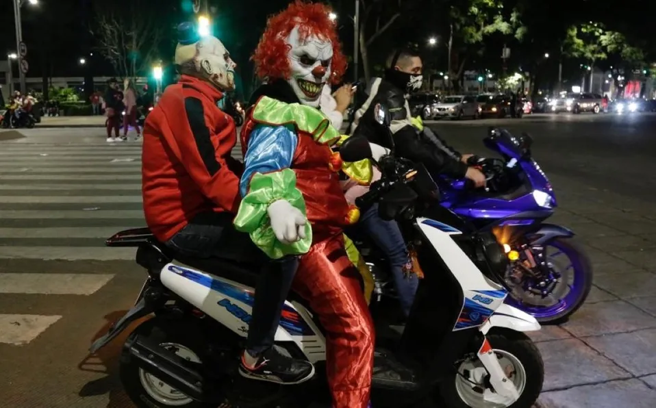

INICIO
LOCALES
ESTATALES
INTERNACIONALES
PRIMERA PLANA
INVESTIGACIÓN
CONTACTO
s
EL DEDO EN LA LLAGA
POLICÍA DE LA CD. RALIZA REDADA CONTRA MOTOCICLETAS
Policía de CdMx realiza operativos para encapsular rodadas de motociclistas
